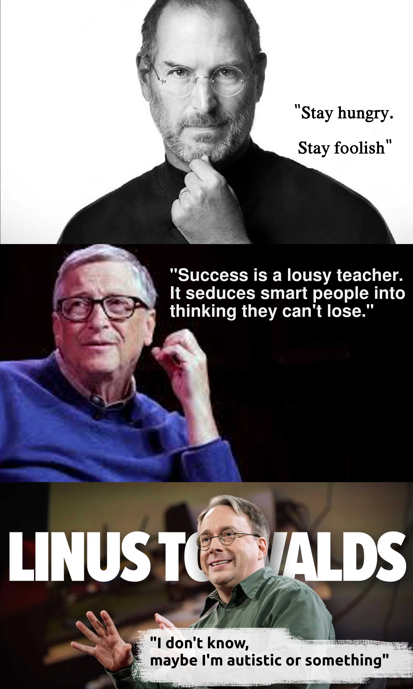

Sabias palabras de nuestro viejo amigo Pascal, conocido por inventar la pascalina: la primera calculadora (que obviamente era mecánica y funcionaba a base de ruedas y engranajes). La hizo con el objetivo de darle una mano a su viejo en el laburo, quien trabajaba como recaudador de impuestos al servicio del Rey, y claro, estaba un poco cansado de andar haciendo cuentas todo el día. Aunque este aparato solo podía sumar y restar, vale decir que es el antepasado remoto (muy remoto) de lo que hoy conocemos como computadora. Sin embargo, otros afirman que, en realidad, la primera calculadora fue obra del alemán Wilhelm Schickard, y por eso algunos lo llamaron "el padre de la era de la computación".
Un maestro del universo. Fue el primero en desarrollar y ver el gran potencial del sistema binario. También diseñó su propia calculadora.
Carlitos diseñó, pero nunca llegó a construir, la máquina analítica para ejecutar programas de tabulación o computación. Fue una de las primeras personas en concebir la idea de una máquina similar a lo que hoy conocemos como computadora. Por ello, algunos lo consideran "el padre de los ordenadores".
Fue la primera en reconocer que la máquina tenía aplicaciones más allá del cálculo puro y en haber publicado lo que actualmente se reconoce como el primer algoritmo destinado a ser procesado por una máquina.
Inventó la computadora electromecánica Z3, diseñada en 1938 y finalizada en 1941. Se considera que fue la primera computadora binaria, digital, programable y completamente automática que fue funcional. O sea, sí: ahora sí estamos hablando de la primera computadora con todas las letras.
Pero, ciertamente, no era la única. Algunos años antes ya se habían construido otras máquinas similares (aunque no eran tan avanzadas como la Z3) y, además, aproximadamente en la misma época que Zuse, muchos otros matemáticos e ingenieros de Estados Unidos y Europa también andaban por ahí revoloteando con ideas parecidas. Porque claro, era la Segunda Guerra Mundial, y todos querían tener sus computadoras para calcular la trayectoria de los misiles para matar a los demás. Zuse hizo la Z3 en 1941 para los alemanes; Turing diseñó la ACE en 1945 para los británicos (aunque nunca se construyó); y Mauchly y Eckert finalizaron la ENIAC en 1945 para los yanquis. Pero el que finalmente la pegó fue el austrohúngaro-estadounidense John von Neumann, con su computadora IAS de 1952. Así es, porque este personaje fue el mismísimo creador de la "arquitectura Von Neumann": la arquitectura que actualmente está presente —aunque con algunas mejoras, obvio— en casi todas las computadoras del mundo.
Así que, en resumen, la computadora tiene muchos padres, de muchos lugares distintos. En un principio fue concebida para aliviarle el trabajo a los contadores, después para ayudar a los ejércitos, y ahora sirve además, entre otras cosas, para matarnos a tiros en el Counter-Strike.
Lo interesante de todo esto es que en el fondo, mirando bien a bajo nivel, todo lo que hace el procesador son unas pocas operaciones aritmético-lógicas básicas con unos y ceros. Solo que, al hacer millones por segundo, puede llegar a lograr resultados insospechados.
¿Qué loco no? ¿Te lo hubieras creído si te la contaban en el siglo XIX?

Para conocer mejor al maestro, déjese llevar por este link.
23 (del 1998) sobre el hacker Karl Koch.
Pirates of Silicon Valley (del 1999) sobre la competencia entre Bill Gates y Steve Jobs.
The Social Network (del 2010) sobre los orígenes de Facebook.
The Imitation Game (del 2014) sobre Alan Turing.
The Thinking Game (del 2024) sobre Demis Hassabis.